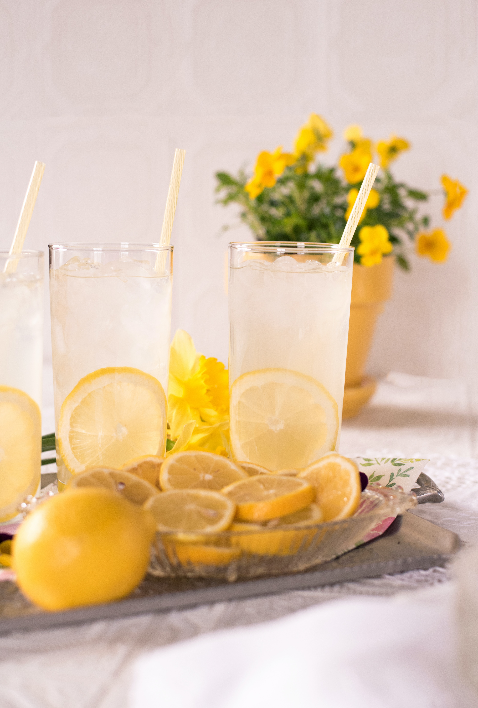

10min
Limonade de coco
Recette
Mettre les glaçons à votre goût dans le blender, ajouter le lait de coco, la crème de coco, le jus de 2 citrons et le sucre. Mixer jusqu'à avoir la consistance désirée.
Ingrédients
Lait de coco
400ml
400ml
Jus de citron
2
2
Crème de coco
2 cuillères
2 cuillères
Sucre
30g
30g
Glaçons
2 cuillères
2 cuillères